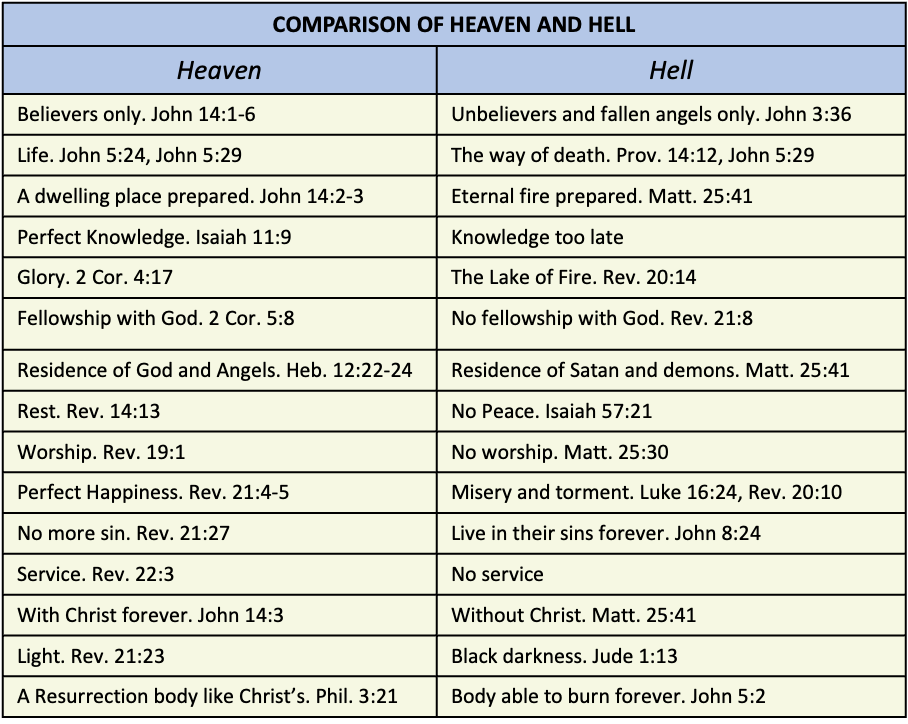

Austin Bible Church
Very little is known about eternity. The original creation of heaven and earth is described in Genesis 1:1 and 2 Peter 3:5.
“In the beginning God created the heavens and the earth.” (Genesis 1:1, NASB)
“For when they maintain this, it escapes their notice that by the word of God the heavens existed long ago and the earth was formed out of water and by water,” (2 Peter 3:5, NASB)
The Holy Spirit’s restoration of the earth is described in Genesis 1:3-31. The universe in which we now live is going to be completely destroyed by fire. 2 Peter 3:5-13; Rev. 21:1.
“But by His word the present heavens and earth are being reserved for fire, kept for the day of judgment and destruction of ungodly men.” (2 Peter 3:7, NASB)
“But the day of the Lord will come like a thief, in which the heavens will pass away with a roar and the elements will be destroyed with intense heat, and the earth and its works will be burned up.” (2 Peter 3:10, NASB)
“Then I saw a new heaven and a new earth; for the first heaven and the first earth passed away, and there is no longer any sea.” (Revelation 21:1, NASB)
The new heavens and new earth is described in Revelation 21:1 and 2 Peter 3:13. The “new heaven” will be residence of the Church or all Church Age believers, although the New Jerusalem will play an important part in our eternal home. The reason is that Jesus Christ will headquarter there and we are the Bride of Christ.
“Then I saw a new heaven and a new earth; for the first heaven and the first earth passed away, and there is no longer any sea.” (Revelation 21:1, NASB)
“But according to His promise we are looking for new heavens and a new earth, in which righteousness dwells.” (2 Peter 3:13, NASB)
The “new earth” will be the residence of Israel. This is the fulfillment of the Abraham and Palestinian Covenant. Land was specifically promised to Abraham and his descendants forever. The eternal aspect of the promises brings a new earth in the picture. Three characteristics of the eternal state and Jesus Christ will be present and accessible to all. There will be perfect happiness and perpetual newness. Rev. 21:3-5.
“And I heard a loud voice from the throne, saying, “Behold, the tabernacle of God is among men, and He will dwell among them, and they shall be His people, and God Himself will be among them, and He will wipe away every tear from their eyes; and there will no longer be any death; there will no longer be any mourning, or crying, or pain; the first things have passed away.” And He who sits on the throne said, “Behold, I am making all things new.” And He said, “Write, for these words are faithful and true.”“ (Revelation 21:3-5, NASB)
There will be nations in eternity as a memorial to the grace of God in preserving the human race so they could be born-again. Nationalism is the basic principle of survival for the human race. The New Jerusalem which comes from God arrives as a completed package. Apparently it is suspended above the earth and will be headquarters for the universe of eternity and the personal residence of the Lord Jesus Christ. The New Jerusalem fulfills a promise from the faithfulness of God to Abraham and is still unfulfilled. The Abraham lived in a tent, died in a tent, and was promised a city in the future. Heb. 11:9-10.
“By faith he lived as an alien in the land of promise, as in a foreign land, dwelling in tents with Isaac and Jacob, fellow heirs of the same promise; for he was looking for the city which has foundations, whose architect and builder is God.” (Hebrews 11:9-10, NASB)
The Holy City of Eternity illustrates something of the glory of eternity. The description of the New Jerusalem is in Revelation 21:9 through Revelation 22:5. Multiply this by infinity and you have a picture of the eternal state.
“Then one of the seven angels who had the seven bowls full of the seven last plagues came and spoke with me, saying, “Come here, I will show you the bride, the wife of the Lamb.” And he carried me away in the Spirit to a great and high mountain, and showed me the holy city, Jerusalem, coming down out of heaven from God, having the glory of God. Her brilliance was like a very costly stone, as a stone of crystal-clear jasper. It had a great and high wall, with twelve gates, and at the gates twelve angels; and names were written on them, which are the names of the twelve tribes of the sons of Israel.” (Revelation 21:9-12, NASB)
“Then he showed me a river of the water of life, clear as crystal, coming from the throne of God and of the Lamb, in the middle of its street. On either side of the river was the tree of life, bearing twelve kinds of fruit, yielding its fruit every month; and the leaves of the tree were for the healing of the nations. There will no longer be any curse; and the throne of God and of the Lamb will be in it, and His bond-servants will serve Him; they will see His face, and His name will be on their foreheads. And there will no longer be any night; and they will not have need of the light of a lamp nor the light of the sun, because the Lord God will illumine them; and they will reign forever and ever.” (Revelation 22:1-5, NASB)
Angels guard the gates. Regenerate man in their position now and later also in resurrection body is and will remain higher than angels. The Eternal State thus is indescribably beautiful.
Comparison of Heaven and Hell
The eternal state will be a very different place for the residence of believers when compared to unbelievers. A comparison of heaven and hell below amplifies these differences.

Characteristics of Heaven
Believers only. John 14:1-6.
““Do not let your heart be troubled; believe in God, believe also in Me. “In My Father’s house are many dwelling places; if it were not so, I would have told you; for I go to prepare a place for you. “If I go and prepare a place for you, I will come again and receive you to Myself, that where I am, there you may be also. “And you know the way where I am going.” Thomas *said to Him, “Lord, we do not know where You are going, how do we know the way?” Jesus *said to him, “I am the way, and the truth, and the life; no one comes to the Father but through Me.” (John 14:1-6, NASB)
Life. John 5:24; John 5:29.
““Truly, truly, I say to you, he who hears My word, and believes Him who sent Me, has eternal life, and does not come into judgment, but has passed out of death into life.” (John 5:24, NASB)
“and will come forth; those who did the good deeds to a resurrection of life, those who committed the evil deeds to a resurrection of judgment.” (John 5:29, NASB)
A dwelling place prepared. John 14:2-3.
““In My Father’s house are many dwelling places; if it were not so, I would have told you; for I go to prepare a place for you. “If I go and prepare a place for you, I will come again and receive you to Myself, that where I am, there you may be also.” (John 14:2-3, NASB)
Perfect Knowledge. Isaiah 11:9.
“They will not hurt or destroy in all My holy mountain, For the earth will be full of the knowledge of the LORD As the waters cover the sea.” (Isaiah 11:9, NASB)
Glory. 2 Cor. 4:17.
“For momentary, light affliction is producing for us an eternal weight of glory far beyond all comparison,” (2 Corinthians 4:17, NASB)
Fellowship. 2 Cor. 5:8.
“we are of good courage, I say, and prefer rather to be absent from the body and to be at home with the Lord.” (2 Corinthians 5:8, NASB)
Residence of God and Angels. Heb. 12:22-24.
“But you have come to Mount Zion and to the city of the living God, the heavenly Jerusalem, and to myriads of angels, to the general assembly and church of the firstborn who are enrolled in heaven, and to God, the Judge of all, and to the spirits of the righteous made perfect, and to Jesus, the mediator of a new covenant, and to the sprinkled blood, which speaks better than the blood of Abel.” (Hebrews 12:22-24, NASB)
Rest. Rev. 14:13.
“And I heard a voice from heaven, saying, “Write, ‘Blessed are the dead who die in the Lord from now on!’“ “Yes,” says the Spirit, “so that they may rest from their labors, for their deeds follow with them.”“ (Revelation 14:13, NASB)
Worship. Rev. 19:1.
“After these things I heard something like a loud voice of a great multitude in heaven, saying, “Hallelujah! Salvation and glory and power belong to our God;” (Revelation 19:1, NASB)
Perfect Happiness. Rev. 21:4-5.
“and He will wipe away every tear from their eyes; and there will no longer be any death; there will no longer be any mourning, or crying, or pain; the first things have passed away.” And He who sits on the throne said, “Behold, I am making all things new.” And He *said, “Write, for these words are faithful and true.”“ (Revelation 21:4-5, NASB)
No more sin. Rev. 21:27.
“and nothing unclean, and no one who practices abomination and lying, shall ever come into it, but only those whose names are written in the Lamb’s book of life.” (Revelation 21:27, NASB)
Service. Rev. 22:3.
“There will no longer be any curse; and the throne of God and of the Lamb will be in it, and His bond-servants will serve Him;” (Revelation 22:3, NASB)
With Christ forever. John 14:3.
““If I go and prepare a place for you, I will come again and receive you to Myself, that where I am, there you may be also.” (John 14:3, NASB)
Light. Rev. 21:23.
“And the city has no need of the sun or of the moon to shine on it, for the glory of God has illumined it, and its lamp is the Lamb.” (Revelation 21:23, NASB)
A Resurrection body like Christ’s. Phil. 3:21.
“who will transform the body of our humble state into conformity with the body of His glory, by the exertion of the power that He has even to subject all things to Himself.” (Philippians 3:21, NASB)
Characteristics of Hell
Unbelievers and fallen angels only. John 3:36.
““He who believes in the Son has eternal life; but he who does not obey the Son will not see life, but the wrath of God abides on him.”“ (John 3:36, NASB)
The way of death. Prov. 14:12; John 5:29.
“There is a way which seems right to a man, But its end is the way of death.” (Proverbs 14:12, NASB)
“and will come forth; those who did the good deeds to a resurrection of life, those who committed the evil deeds to a resurrection of judgment.” (John 5:29, NASB)
Eternal fire prepared. Matt. 25:41.
““Then He will also say to those on His left, ‘Depart from Me, accursed ones, into the eternal fire which has been prepared for the devil and his angels;” (Matthew 25:41, NASB)
Knowledge too late.
The Lake of Fire. Rev. 20:14.
“Then death and Hades were thrown into the lake of fire. This is the second death, the lake of fire.” (Revelation 20:14, NASB)
No fellowship with God. Rev. 21:8.
““But for the cowardly and unbelieving and abominable and murderers and immoral persons and sorcerers and idolaters and all liars, their part will be in the lake that burns with fire and brimstone, which is the second death.”“ (Revelation 21:8, NASB)
Residence of Satan and demons. Matt. 25:41.
““Then He will also say to those on His left, ‘Depart from Me, accursed ones, into the eternal fire which has been prepared for the devil and his angels;” (Matthew 25:41, NASB)
No Peace. Isaiah 57:21.
““There is no peace,” says my God, “for the wicked.”“ (Isaiah 57:21, NASB)
No worship. Matt. 25:30.
““Throw out the worthless slave into the outer darkness; in that place there will be weeping and gnashing of teeth.” (Matthew 25:30, NASB)
Misery and torment. Luke 16:24; Rev. 20:10.
““And he cried out and said, ‘Father Abraham, have mercy on me, and send Lazarus so that he may dip the tip of his finger in water and cool off my tongue, for I am in agony in this flame.’“ (Luke 16:24, NASB)
“And the devil who deceived them was thrown into the lake of fire and brimstone, where the beast and the false prophet are also; and they will be tormented day and night forever and ever.” (Revelation 20:10, NASB)
Live in their sins forever. John 8:24.
““Therefore I said to you that you will die in your sins; for unless you believe that I am He, you will die in your sins.”“ (John 8:24, NASB)
No service.
Without Christ. Matt. 25:41.
““Then He will also say to those on His left, ‘Depart from Me, accursed ones, into the eternal fire which has been prepared for the devil and his angels;” (Matthew 25:41, NASB)
Black darkness. Jude 1:13.
“wild waves of the sea, casting up their own shame like foam; wandering stars, for whom the black darkness has been reserved forever.” (Jude 1:13, NASB)
Body able to burn forever. John 5:29.
“and will come forth; those who did the good deeds to a resurrection of life, those who committed the evil deeds to a resurrection of judgment.” (John 5:29, NASB)
The Eternal State for the Believer and Unbeliever
Man’s initial relationship to God is one of the creature to the Creator. God is the God of the whole human race by virtue of creation, whether acknowledged or not. He is not the Father of the human race, only of those who believe. Jer. 32:27; Gal. 3:26.
““Behold, I am the LORD, the God of all flesh; is anything too difficult for Me?”“ (Jeremiah 32:27, NASB)
“For you are all sons of God through faith in Christ Jesus.” (Galatians 3:26, NASB)
Man is a living soul. All souls belong to God. Gen. 2:7; Ezek. 18:4; Dan. 5:23.
“Then the LORD God formed man of dust from the ground, and breathed into his nostrils the breath of life; and man became a living being.” (Genesis 2:7, NASB)
““Behold, all souls are Mine; the soul of the father as well as the soul of the son is Mine. The soul who sins will die.” (Ezekiel 18:4, NASB)
“but you have exalted yourself against the Lord of heaven; and they have brought the vessels of His house before you, and you and your nobles, your wives and your concubines have been drinking wine from them; and you have praised the gods of silver and gold, of bronze, iron, wood and stone, which do not see, hear or understand. But the God in whose hand are your life-breath and all your ways, you have not glorified.” (Daniel 5:23, NASB)
Man’s eternal relationship with God is determined by his response to God’s offer of salvation by faith alone in Jesus Christ. John 3:36.
““He who believes in the Son has eternal life; but he who does not obey the Son will not see life, but the wrath of God abides on him.”“ (John 3:36, NASB)
There are two kinds of people in the human race: believer and unbeliever - saved souls and lost souls. There are two possible destinations - a place of bliss for believers (John 14:1-3 and Rev. 21:1 - Rev. 22:7) and a place of torment (torture) for unbelievers. Luke 16:19-31; Rev. 20:15.
““Do not let your heart be troubled; believe in God, believe also in Me. “In My Father’s house are many dwelling places; if it were not so, I would have told you; for I go to prepare a place for you. “If I go and prepare a place for you, I will come again and receive you to Myself, that where I am, there you may be also.” (John 14:1-3, NASB)
“And I saw the holy city, new Jerusalem, coming down out of heaven from God, made ready as a bride adorned for her husband.” (Revelation 21:2, NASB)
“Then He said to me, “It is done. I am the Alpha and the Omega, the beginning and the end. I will give to the one who thirsts from the spring of the water of life without cost.” (Revelation 21:6, NASB)
““In Hades he lifted up his eyes, being in torment, and *saw Abraham far away and Lazarus in his bosom. “And he cried out and said, ‘Father Abraham, have mercy on me, and send Lazarus so that he may dip the tip of his finger in water and cool off my tongue, for I am in agony in this flame.’“ (Luke 16:23-24, NASB)
“And if anyone’s name was not found written in the book of life, he was thrown into the lake of fire.” (Revelation 20:15, NASB)
In John 5:29, the believer anticipates “a resurrection to life” where the “good” is acceptance of Jesus Christ and “evil” is rejection of Jesus Christ.
“and will come forth; those who did the good deeds to a resurrection of life, those who committed the evil deeds to a resurrection of judgment.” (John 5:29, NASB)
The believer anticipates a “very much better” place (Phil. 1:23), eternity in the very presence of God (2 Cor. 5:8), an inheritance reserved in heaven, (1 Peter 1:4) and a reunion with loved ones in the Lord (1 Thess. 4:16-17).
“But I am hard-pressed from both directions, having the desire to depart and be with Christ, for that is very much better;” (Philippians 1:23, NASB)
“we are of good courage, I say, and prefer rather to be absent from the body and to be at home with the Lord.” (2 Corinthians 5:8, NASB)
“to obtain an inheritance which is imperishable and undefiled and will not fade away, reserved in heaven for you,” (1 Peter 1:4, NASB)
“For the Lord Himself will descend from heaven with a shout, with the voice of the archangel and with the trumpet of God, and the dead in Christ will rise first. Then we who are alive and remain will be caught up together with them in the clouds to meet the Lord in the air, and so we shall always be with the Lord.” (1 Thessalonians 4:16-17, NASB)
The unbeliever faces eternity separated completely from God with a “resurrection of judgment” body to reside in the Lake of Fire forever. John 5:29; Matt. 25:41; Rev. 20:15; Rev. 21:8.
“and will come forth; those who did the good deeds to a resurrection of life, those who committed the evil deeds to a resurrection of judgment.” (John 5:29, NASB)
““Then He will also say to those on His left, ‘Depart from Me, accursed ones, into the eternal fire which has been prepared for the devil and his angels;” (Matthew 25:41, NASB)
“And if anyone’s name was not found written in the book of life, he was thrown into the lake of fire.” (Revelation 20:15, NASB)
““But for the cowardly and unbelieving and abominable and murderers and immoral persons and sorcerers and idolaters and all liars, their part will be in the lake that burns with fire and brimstone, which is the second death.”“ (Revelation 21:8, NASB)
The soul of the believer is saved at salvation. 1 Peter 1:9; Mark 8:36-37; Psalms 19:7; Psalms 34:22.
“obtaining as the outcome of your faith the salvation of your souls.” (1 Peter 1:9, NASB)
““For what does it profit a man to gain the whole world, and forfeit his soul? “For what will a man give in exchange for his soul?” (Mark 8:36-37, NASB)
“The law of the LORD is perfect, restoring the soul; The testimony of the LORD is sure, making wise the simple.” (Psalms 19:7, NASB)
“The LORD redeems the soul of His servants, And none of those who take refuge in Him will be condemned.” (Psalms 34:22, NASB)
The believer’s soul is stabilized as they live the spiritual life on earth by gaining epignosis Bible doctrine in the soul. Acts 14:22.
“strengthening the souls of the disciples, encouraging them to continue in the faith, and saying, “Through many tribulations we must enter the kingdom of God.”“ (Acts 14:22, NASB)
In eternity, the believer’s soul is delivered by receiving a resurrection body that has no sin nature. 2 Cor. 5:8; Phil. 3:21.
“we are of good courage, I say, and prefer rather to be absent from the body and to be at home with the Lord.” (2 Corinthians 5:8, NASB)
“who will transform the body of our humble state into conformity with the body of His glory, by the exertion of the power that He has even to subject all things to Himself.” (Philippians 3:21, NASB)
The Believer’s Hope
The believer’s hope is that we know facts concerning eternity. When we die, we will be absent from the body and immediately face to face with the Lord. 2 Cor. 5:8.
“we are of good courage, I say, and prefer rather to be absent from the body and to be at home with the Lord.” (2 Corinthians 5:8, NASB)
There will be no judgment or condemnation in Christ. Rom. 8:1.
“Therefore there is now no condemnation for those who are in Christ Jesus.” (Romans 8:1, NASB)
The appointment with the second death is cancelled. Heb. 9:27-28.
“And inasmuch as it is appointed for men to die once and after this comes judgment, so Christ also, having been offered once to bear the sins of many, will appear a second time for salvation without reference to sin, to those who eagerly await Him.” (Hebrews 9:27-28, NASB)
We will have a new home, a new dwelling place. John 14:1-3.
““Do not let your heart be troubled; believe in God, believe also in Me. “In My Father’s house are many dwelling places; if it were not so, I would have told you; for I go to prepare a place for you. “If I go and prepare a place for you, I will come again and receive you to Myself, that where I am, there you may be also.” (John 14:1-3, NASB)
We have an eternal inheritance. 1 Peter 1:4-5.
“to obtain an inheritance which is imperishable and undefiled and will not fade away, reserved in heaven for you, who are protected by the power of God through faith for a salvation ready to be revealed in the last time.” (1 Peter 1:4-5, NASB)
There will be no more sorrow, no more tears. Rev. 21:4.
“and He will wipe away every tear from their eyes; and there will no longer be any death; there will no longer be any mourning, or crying, or pain; the first things have passed away.”“ (Revelation 21:4, NASB)
Will have a resurrection body with which we will live with Jesus Christ forever. 1 Thess. 4:16-18; Phil. 3:21; 1 John 3:1-2; 1 Cor. 15:51-57; Phil. 1:21.
“For the Lord Himself will descend from heaven with a shout, with the voice of the archangel and with the trumpet of God, and the dead in Christ will rise first. Then we who are alive and remain will be caught up together with them in the clouds to meet the Lord in the air, and so we shall always be with the Lord. Therefore comfort one another with these words.” (1 Thessalonians 4:16-18, NASB)
“who will transform the body of our humble state into conformity with the body of His glory, by the exertion of the power that He has even to subject all things to Himself.” (Philippians 3:21, NASB)
“See how great a love the Father has bestowed on us, that we would be called children of God; and such we are. For this reason the world does not know us, because it did not know Him. Beloved, now we are children of God, and it has not appeared as yet what we will be. We know that when He appears, we will be like Him, because we will see Him just as He is.” (1 John 3:1-2, NASB)
“For to me, to live is Christ and to die is gain.” (Philippians 1:21, NASB)
Characteristics of Eternal Home with Christ
In Revelation 21:1, it says that there will be no more sea.
"Then I saw a new heaven and a new earth; for the first heaven and the first earth passed away, and there is no longer any sea." (Revelation 21:1, NASB)
Jesus Christ will dwell among all believer in resurrection bodies forever. There will no longer be any tears, death, sorrow, or pain. No one will have an old sin nature in eternity. There can be no sin or production of human good. There will be no world system of Satan as we know it today. Our bodies will be perfect, everlasting, and indestructible. Satan and all of his demons will be in the Lake of Fire, so they can never deceive again. Rev. 21:3-4.
"And I heard a loud voice from the throne, saying, "Behold, the tabernacle of God is among men, and He will dwell among them, and they shall be His people, and God Himself will be among them, and He will wipe away every tear from their eyes; and there will no longer be any death; there will no longer be any mourning, or crying, or pain; the first things have passed away."" (Revelation 21:3-4, NASB)
In Revelation 21:5, “making all things new” means no corrosion, rust, rot, decay, mold, or fungus. Nothing will decay. It will all remain perfect.
"And He who sits on the throne said, "Behold, I am making all things new." And He *said, "Write, for these words are faithful and true."" (Revelation 21:5, NASB)
There will be no unbelievers. Rev. 21:8.
""But for the cowardly and unbelieving and abominable and murderers and immoral persons and sorcerers and idolaters and all liars, their part will be in the lake that burns with fire and brimstone, which is the second death."" (Revelation 21:8, NASB)
The New Jerusalem is described in Revelation 21:2 and Revelation 21:10.
"And I saw the holy city, new Jerusalem, coming down out of heaven from God, made ready as a bride adorned for her husband." (Revelation 21:2, NASB)
"And he carried me away in the Spirit to a great and high mountain, and showed me the holy city, Jerusalem, coming down out of heaven from God," (Revelation 21:10, NASB)
There will be no sun or moon, but the light will be everywhere coming from Jesus Christ Himself. That means there will be no night. Rev. 21:23; Rev. 22:5; Rev. 21:25.
"And the city has no need of the sun or of the moon to shine on it, for the glory of God has illumined it, and its lamp is the Lamb." (Revelation 21:23, NASB)
"And there will no longer be any night; and they will not have need of the light of a lamp nor the light of the sun, because the Lord God will illumine them; and they will reign forever and ever." (Revelation 22:5, NASB)
"In the daytime (for there will be no night there) its gates will never be closed;" (Revelation 21:25, NASB)
There will be separate nations. Rev. 21:24.
"The nations will walk by its light, and the kings of the earth will bring their glory into it." (Revelation 21:24, NASB)
There will be a river and a street (street is singular not plural) with the tree of life on either side. Rev. 22:1-2.
"Then he showed me a river of the water of life, clear as crystal, coming from the throne of God and of the Lamb, in the middle of its street. On either side of the river was the tree of life, bearing twelve kinds of fruit, yielding its fruit every month; and the leaves of the tree were for the healing of the nations." (Revelation 22:1-2, NASB)
There will not be any curse or any law that cannot be kept. There will also be Christian service and rulership. Rev. 22:3-5.
"There will no longer be any curse; and the throne of God and of the Lamb will be in it, and His bond-servants will serve Him; they will see His face, and His name will be on their foreheads. And there will no longer be any night; and they will not have need of the light of a lamp nor the light of the sun, because the Lord God will illumine them; and they will reign forever and ever." (Revelation 22:3-5, NASB)
Christ is behind our hope. He suffered as our substitute on the Cross. Communion reminds us of the suffering of Christ. There is national suffering. There is family suffering. There is personal suffering. There are many reasons by believers suffer, but the plan of God is bigger than anything life can throw your way, if you keep in fellowship, in communion with the Lord.